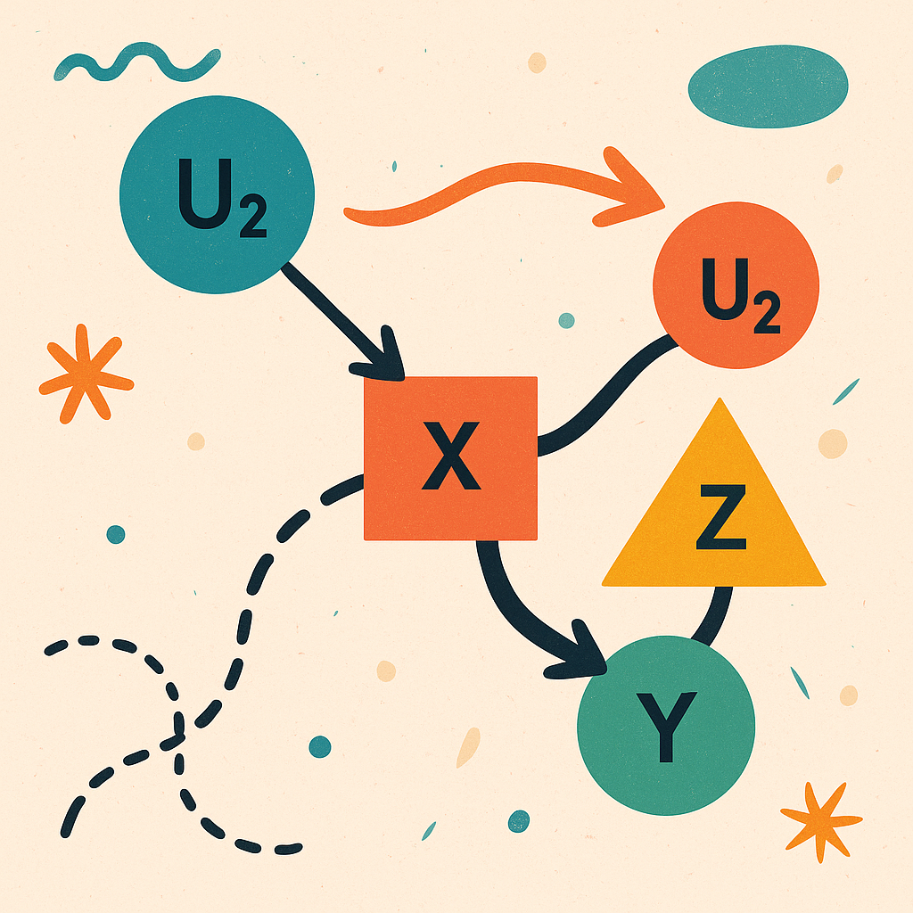
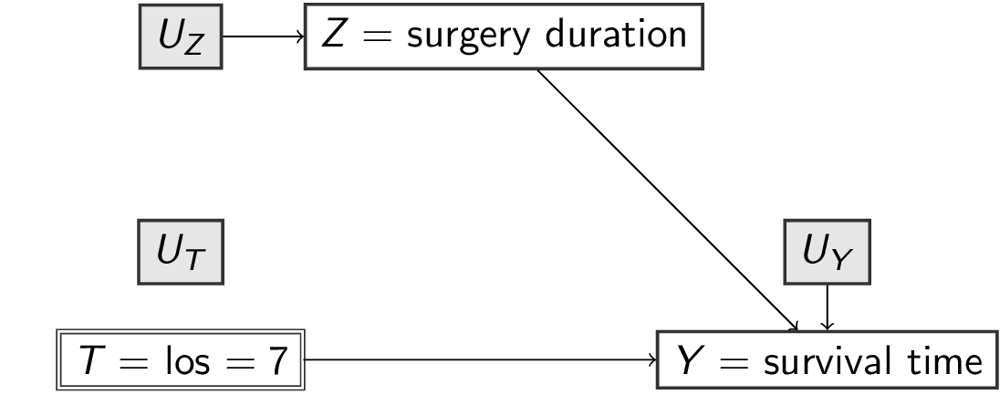
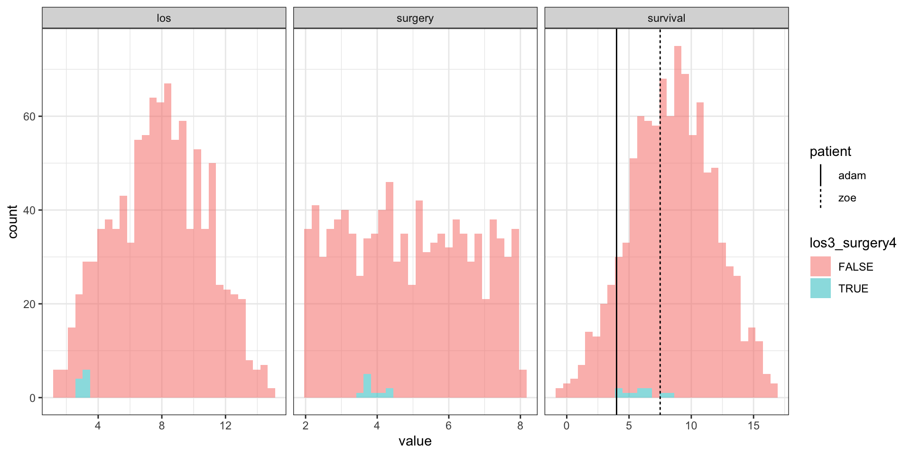

f_surgery <- function(u_surgery) { # pa_surgery = {}
u_surgery
}
f_los <- function(surgery, u_los) { # pa_los = {surgery}
surgery + u_los
}
f_survival <- function(surgery, los, u_survival) { # pa_survival = {sugery, los}
survival = los - 2 * surgery + u_survival
}
scm1 <- function(u_surgery, u_los, u_survival) {
surgery = f_surgery(u_surgery)
los = f_los(surgery, u_los)
survival = f_survival(surgery, los, u_survival)
c(surgery=surgery, los=los, survival=survival)
}
scm1(2, 1, 5)Structural Causal Models
introduction
Wouter van Amsterdam
2024-08-06
DAG-recap
In past lectures on DAGs
- causal directed acyclic graphs (DAGs) encode assumptions on what variables cause what
- an intervention is defined as a mutilation of this DAG where the treatment variable no longer ‘listens’ to its parents
- a causal effect is the effect of an intervention
- DAG patterns:
- fork (confounding)
- chain (mediation)
- collider
- typically:
- condition on confounders, don’t condition on mediators or colliders
- in more complex DAGs, use d-separation to check identifyability
- backdoor criterion
In this lecture: structural causal models (SCMs)
\[\begin{align} U_Z, U_T, U_Y &\sim p(U) \\ Z &= f_Z(U_Z) \\ T &= f_T(Z,U_T) \\ Y &= f_Y(T,Z,U_Y) \end{align}\]

Why SCMs?
- With DAGs we can:
- express (non-parametric) prior knowledge
- understand that seeing \(\neq\) doing
- know what variables to condition on for estimating treatment effect
- However,
- DAGs and RCTs do not cover all causal questions
- SCMs go a level deeper than DAGs
- DAGs naturally ‘arise’ from SCMs
- some questions are not identified when only specifying a DAG, but we may have additional information that can lead to identification
- understand ‘identifyability’
- SCM thinking aligns [^according to me] with physical thinking about the world and is a natural way to think about causality
Topics of today
- SCMs: the world as computer programs
- interventions are submodels
- bonus queries:
- counterfactuals
- Pearl Causal Hierarchy
- other uses of DAGs: missing data, selection
- reflections on DAGs, limitations
Structural Causal Models: definitions
Think of the world as a computer program with a set of
- (endogenous) variables:
surgery= duration of surgery (hours)los= length of stay in hospital post surgery (days)survival= survival time (years)
- background variables (exogenous):
u_surgery,u_los,u_survival
- functions
f_for each variable which depend on its parentspa_and its own backgroundu_:surgery = f_surgery(pa_surgery,u_surgery)los = f_los(pa_los, u_los)survival = f_survival(pa_survival, u_survival)
Together these define a Structural Causal Model (see definition 7.1.1 in Pearl 2009, and further) (notation: \(M=<U,V,F>\))
Structural Causal Model 1
surgery los survival
2 3 4 Recursive Structural Causal Models imply a Directed Acyclic Graph
An SCM is recursive, i.e. acyclic when following the chain of parents, you never end up at the same variable twice
Recursive Structural Causal Models imply a Directed Acyclic Graph
An SCM is recursive, i.e. acyclic when following the chain of parents, you never end up at the same variable twice
Recursive Structural Causal Models imply a Directed Acyclic Graph
An SCM is recursive, i.e. acyclic when following the chain of parents, you never end up at the same variable twice
scm1 (without specifying the f_s) and the DAG are equivalent (they describe the same knowledge of the world)
for the remainder, we assume recursiveness
Submodel and Effect of Action
- submodel: in
scm1replacef_loswith a specific value, e.g.7days
surgery los survival
2 7 8 - effect of action: resulting SCM of submodel (notation: \(M_x=<U,V,F_x>\))
Submodel and Effect of Action as a mutilated DAG
In scm1 replace f_los with a specific value, e.g. 7 days (notation: \(M_x\))

The DAG describes a submodel where \(T\) no longer ‘listens’ to any variables but is controlled to be equal to a specific value (e.g. 7)
The Effect of Action \(do(X=x)\) is defined as the submodel \(M_x\).
Specifying a distribution for exogenous variables U
- Exogenous variables
Urepresent random variation in the world. - We can specify a distribution for them (e.g. Gaussian, Uniform)
u_surgery u_los u_survival
4.317931 3.909789 11.331566 A Probabilistic Causal Model is a SCM with a distribution over U
u_surgery u_los u_survival surgery los survival
2.034069 5.222650 12.690868 2.034069 7.256719 15.879449 Calculating a treatment effect in a fully specified probabilistic causal model
- take random samples from
U, push forward throughsubmodel7andsubmodel3
# N = 1e3
# us <- map(1:N, ~sample_u())
v3s <- map(us, ~do.call(submodel3, as.list(.x)))
v7s <- map(us, ~do.call(submodel7, as.list(.x)))
v3df <- v3s |> map(~data.table(t(.x))) |> rbindlist()
v7df <- v7s |> map(~data.table(t(.x))) |> rbindlist()
v3df[, idx:=.I]
v7df[, idx:=.I]
dfa <- rbindlist(list(
scm1=vdf,
submodel3=v3df,
submodel7=v7df
), idcol='model')
dfa[, list(mean_survival=mean(survival)), by="model"] model mean_survival
<char> <num>
1: scm1 8.613519
2: submodel3 3.585969
3: submodel7 7.585969Identification
Recap of definitions
- Structural Causal model:
- endogenous variables \(V\)
- exogenous (noise) variables \(U\)
- deterministic functions
f_i(pa_i,u_i)
- Effect of Action do\((T=t)\): submodel where
f_Treplaced with fixed valuet - Probabilistic Causal Model: SCM + distribution over U
In the real world
- knowing the SCM is a super-power: you basically know everything revelant about the system, but in the real world:
- we do not observe \(U\)
- we typically do not know
f_- we may be willing to place assumptions on
f_(e.g. generalized linear models)
- we may be willing to place assumptions on
- we are presented with realizations \(V_i\) of this SCM over a random sample of U
- this is another assumption on the sampling but this is largely orthogonal to causal inference
- we may be interest in knowing:
- what is the expected survival time if we always admit patients for exactly 7 days?
When and how might we learn the answer to such questions?
Identification
Causal effect identification:
Definition 3.2.3 (Identifiability)
Let \(Q(M)\) be any computable quantity of a model \(M\).
We say that \(Q\) is identifiable in a class \(\mathbb{M}\) of models if, for any pairs of models \(M_1\) and \(M_2\) from \(\mathbb{M}\),
\(Q(M_1) = Q(M_2)\) whenever \(P_{M_1} (y) = P_{M_2} (y)\).
If our observations are limited and permit only a partial set \(F_M\) of features (of \(P_M(y)\)) to be estimated,
we define \(Q\) to be identifiable from \(F_M\) if \(Q(M_1) = Q(M_2)\) whenever \(F_{M_1} = F_{M_2}\).
Idenfitication in pictures
Someone killed the priest (†), we want to know who-dunnit (\(=Q\))
Based on prior knowledge on 5 suspects (all the SCMs compatible with our DAG)
If we had full data, we would know it was \(M_3\)
Idenfitication in pictures
Someone killed the priest {{< iconify ph:knife >}} , we want to know who-dunnit (\(=Q\))
Based on prior knowledge on 5 suspects (all the SCMs compatible with our DAG)
If we had full data, we would have know it was \(M_3\)
Unfortunately, it was dark an we only got a gray-scale image of the perpetrator
All our suspects (models) lead to the same partial observations
Based on observed data and assumptions we cannot identify the answer to our question \(Q\),
i.e. multiple models with different answers for \(Q\) fit the observed data equally well
Not identified vs estimand
The backdoor adjustment in this DAG means the correct estimand is:
\[\begin{align} P(Y|\text{do}(T)) &= \sum_{z} P(Y|T,z)P(Z=z) \end{align}\]
- If we did not observe \(Z\), we could still come up with a latent-variable model for \(Z\) and a model for \(Y|T,Z\) and get a value.
- However, we can formulate multiple distinct latent variable models that each yield a different treatment effect (i.e. the output of the estimand)
- But these latent variable models all fit the observed data equally well
- So we cannot identify the treatment effect
Seeing is not doing
\[\begin{align} P(Y|T) &= \sum_{z} P(Y|T,z)P(Z=z|T) \\ &=^2 \sum_{z} P(Y|T,z)P(Z=z) \end{align}\]
- \(P(Y|\text{do}(T)) \neq P(Y|T)\) is Pearl’s definition of confounding (def 6.2.1)
- this shows why RCTs are special (i.e. no backdoor paths into \(T\))
Another path to identification: parametric assumptions
- for example:
- assumption 1: \(\mathbb{M}_1\), all SCMs with same DAG
- assumption 2: \(\mathbb{M}_2\) SCMs with linear functions and Gaussian error terms
- assumption 1+2: \(\mathbb{M} = \mathbb{M_1} \cap \mathbb{M_2}\) (DAG + linear gaussian)
- many more effects are identified in this setting
- ‘works’ with unobserved confounding, positivity violations
- caveats:
- much harder to determine identifyability (no backdoor-rule)
- prefer weaker assumptions over stronger assumption
Defining counterfactuals and the causal Hierarchy (of questions)
Counterfactuals
- all of the above can be achieved with DAGs, but we haven’t used SCMs super-power yet: counterfactuals
- RCT / DAG questions: What is the expected survival if we keep all patients in the hospital for 7 days?
Take it one level higher: counterfactuals
For patient Adam we had this data:
- surgery duration: 4 hours
- length of stay: 3 days
- survival: 4 years
For patient Zoe we had this data:
- surgery duration: 4 hours
- length of stay: 3 days
- survival: 7.5 years
- we do not observe Adam’s/Zoe’s
U - What would the expected survival have been had Adam/Zoe been kept in the hospital for 7 days?
Adam versus Zoe
- Average causal effects in subgroup with
surgery=4:- 3-days LOS: 5.7
- 7-days LOS: 9.7

- what do we expect for Adam and Zoe if they would have been kept in the hospital for 7 days?
Computing counterfactuals with SCMs
- Given our information on the structural equation for
survival: \[\text{survival} = \text{los} - 2*\text{surgery} + u_{\text{survival}}\] - and observed values on Adam’s and Zoe’s
surgeryANDsurvivalfollowinglos=3 - we can compute their individual \(u_{\text{survival}}\):
| patient | surgery | los | survival |
|---|---|---|---|
| Adam | 4 | 3 | 4 |
| Zoe | 4 | 3 | 7.5 |
| patient | surgery | los | survival | u_survival |
|---|---|---|---|---|
| Adam | 4 | 3 | 4 | 9 |
| Zoe | 4 | 3 | 7.5 | 12.5 |
| patient | surgery | los | survival | u_survival | survival7 |
|---|---|---|---|---|---|
| Adam | 4 | 3 | 4 | 9 | 8 |
| Zoe | 4 | 3 | 7.5 | 12.5 | 11.5 |
- and (counterfactual) survival under 7 days LOS
Computing counterfactuals
- notation: \(P(Y_{t'} = y' | T=t,Y=y)\) where \(Y_{t'}\) means “set \(T=t'\) through intervention”
- steps:
- Abduction (update \(P(U)\) from observed evidence)
- Action (modify the treatment)
- Prediction (calculate outcomes in submodel, putting in the updated \(P(U)\))
Pearl’s Causal Hierarchy (of questions)
If you have data to solve the upper, you can solve the lower ranks too (Bareinboim et al. 2022)
- counterfactuals
- interventions
- associations
Where do we get this knowledge from?
- not from observational data
- not from RCTs
- from assumptions
- can get bounds from combinations of RCT data and observational data
- caveat: some say the hierarchy is upside down because you go further away from data and closer to unverifiable assumptions the ‘higher’ you get
Not covered but also possible:
- DAGs:
- soft intervention: don’t set treatment to fixed value but replace function with other function of variables
- express patterns for missing data by including missingness indicators
- SCMs:
- probability of sufficiency
- probability of necessity
References

Wouter van Amsterdam — WvanAmsterdam — vanamsterdam.github.io
Bareinboim, Elias, Juan Correa, Duligur Ibeling, and Thomas Icard. 2022. “On Pearl’s Hierarchy and the Foundations of Causal Inference (1st Edition).” In Probabilistic and Causal Inference: The Works of Judea Pearl, edited by Hector Geffner, Rita Dechter, and Joseph Halpern, 507–56. ACM Books.
Pearl, Judea, ed. 2009. “The Logic of Structure-Based Counterfactuals.” In Causality, 2nd ed., 201–58. Cambridge: Cambridge University Press. https://doi.org/10.1017/CBO9780511803161.009.